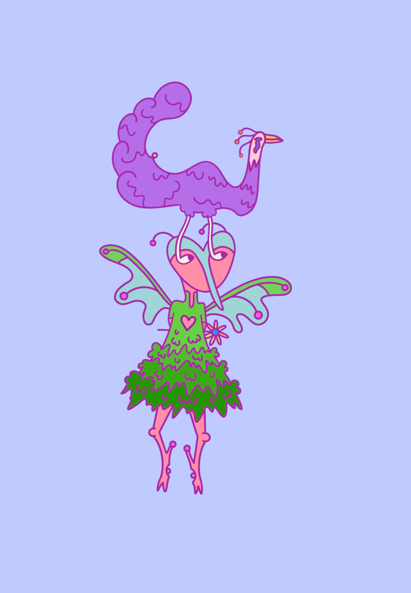
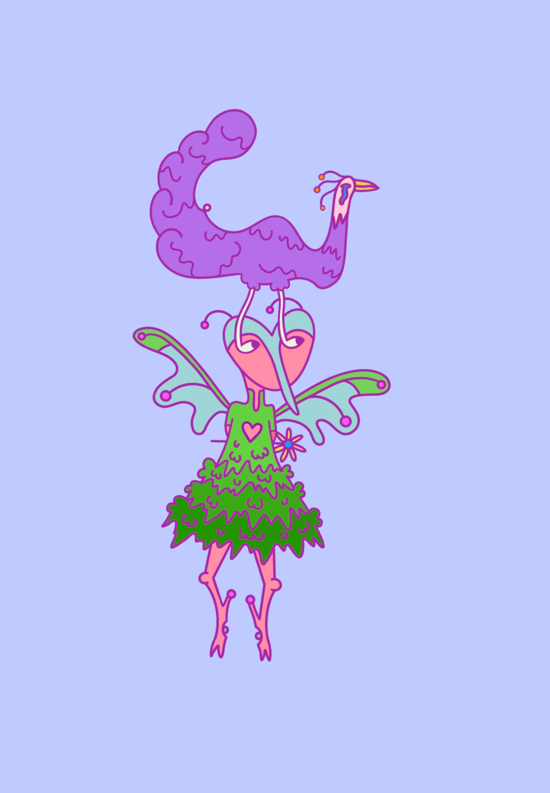

Mijn Ambities
Mijn ambities zijn om merch te maken met mijn eigen kunst erop. Het zou mij enorm gaaf lijken als mensen dat zouden kopen en het zouden dragen of in huis zouden hebben; iets wat ik gemaakt heb. Ik ben nog niet heel lang bezig met het maken van prints en ontwerpen voor op shirts, hier ben ik volop mee bezig. Ik hoop in het aankomende jaar een aantal connecties te leggen met bijvoorbeeld kleinere winkels die ontwerpen voor op shirts zoeken. Om te beginnen vind ik het prima om hier weinig geld mee te maken. Het feit dat iemand het zou kunnen kopen en dragen zou ik al heel gaaf vinden.
Animatie
Animatie in in zowel films als series heb ik altijd bewonderd. Tekenen is iets, en animatie is weer iets heel anders. Er zijn zo veel mogelijkheden en manieren/stijlen om dit te doen. Het lijkt mij leuk om te leren en om daar al-bestaande tekeningen en concepten in te verwerken
Educatieve boeken en games
Het ontwerpen van een educatief spel of boek met eigen illustraties lijkt mij ook enorm gaaf om te ontwikkelen. Het liefst iets voor kinderen maar het zou ook voor volwassenen kunnen zijn. Dit vind ik zo interessant omdat ik dan misschien wel iets maak waar een hele generatie mee opgroeit

 

Ondernemen
Zoals ik net al uitgelegde zou ik merch willen maken met eigen kunst er op. Hier zou ik een klein bedrijfje in kunnen opstarten, waarin ik mijn eigen ontwerpen en kunst op kleding plak, of prints, en het vervolgens verkoop. Ik zou social media kunnen gebruiken om dit te marketen. Op deze merch zou ik ook een bijdrage willen leggen aan het milieu. Door bijvoorbeeld klanten de optie van donatie te geven, of om bijvoorbeeld activistisch getinte teksten of afbeeldingen op de shirts te zetten